Many social websites implement this specification and can host OpenSocial Gadgets, for example iGoogle, hi5, LinkedIn, MySpace, orkut, Friendster, Ning, XING and others. The "social" aspect of OpenSocial Gadgets, including access to user data and their network of "friends", is also not yet implemented in e4 - we have focused on the Gadgets part of the specification.
The procedure to add a gadget is pretty simple:
- Press CTRL+3 to bring up Quick Access, type "Open gadget" and press Enter.
- A dialog will open in which you can enter the gadget URL (for example, use
http://www.google.com/ig/modules/dictionary.xmlfor a Google Dictionary gadget). - A new view displaying your gadget is now available in your workbench! You can repeat the process to also display your Twitter timeline, a gadget showing the temperature at your home, etc.
If your gadget is customizable, you can use the View menu to edit its preferences on a dedicated property page.
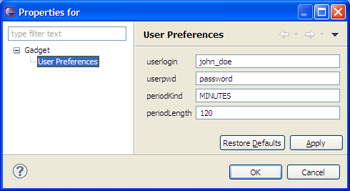You can find more details, and a list of gadgets to try, on the e4 OpenSocial wiki page. Keep in mind that the implementation is in a very early stage. Many features of the OpenSocial Gadgets specification are still missing or are not fully implemented.
ComboViewer of JFace
can be defined in the same way as ListViewer and
TableViewer using the standard JFace class.
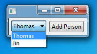
ILabelProvider and IContentProvider
are not needed any more.
Here is the code for TableViewer,
<TableViewer input="{Binding Path=employees}">
<TableViewer.columns>
<TableViewerColumn width="150" text="Name" displayMemberPath="name"/>
<TableViewerColumn width="150" text="Age" displayMemberPath="age"/>
</TableViewer.columns>
<TableViewer.control.layoutData>
<GridData horizontalAlignment="FILL" grabExcessHorizontalSpace="true"/>
</TableViewer.control.layoutData>
</TableViewer>
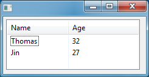
Here is the code for ComboViewer,
<ComboViewer input="{Binding Path=employees}" displayMemberPath="name">
<ComboViewer.control.layoutData>
<GridData horizontalAlignment="FILL"
grabExcessHorizontalSpace="true"/>
</ComboViewer.control.layoutData>
</ComboViewer>
And the code of ListViewer
<ListViewer input="{Binding Path=employees}" displayMemberPath="name">
<ListViewer.control.layoutData>
<GridData horizontalAlignment="FILL"
grabExcessHorizontalSpace="true"/>
</ListViewer.control.layoutData>
</ListViewer>
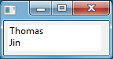ViewerFilter is provided
to define a filter in a JFace viewer. This class contains a collection of Condition
which is used as predicate to select the elements to display.
<TableViewer Name="TableViewer" input="{Binding Path=employees}" >
<TableViewer.filters>
<ViewerFilter>
<ViewerFilter.conditions>
<Condition property="age" value="30" operator="GT"/>
<Condition property="name" value="Th*" operator="LIKE"/>
</ViewerFilter.conditions>
</ViewerFilter>
</TableViewer.filters>
<TableViewer.columns>
<TableViewerColumn width="150" text="Name" displayMemberPath="name"/>
<TableViewerColumn width="150" text="Age" displayMemberPath="age"/>
</TableViewer.columns>
</TableViewer>
This TableViewer displays all employees whose name starts
with "Th" and age is great than 30.
XWT:
IObservableValue XWT.getObservableValue(Object control, Object data, String path);
For example, the element type of a collection is always missing in binary class in Java.
This information is necessary to build the Data binding chain in Mater/Detail pattern.
In the following example, we have a class Company with a property
"employees" in a collection or an array. The employees are displayed in a
ListViewer, when user select an element, its name will be displayed
in the Label below..
<ListViewer name="master" input="{Binding Path=employees}" displayMemberPath="name">
<ListViewer.control.layoutData>
<GridData horizontalAlignment="FILL"
grabExcessHorizontalSpace="true"/>
</ListViewer.control.layoutData>
</ListViewer>
<Label text="{Binding elementName=master,path=singleSelection.(j:Employee.name)}"/>
The property "name" in the binding expression is prefixed by its type Employee and enclosed by parentheses.
Here is the example Snippet017 of Jface Data binding ported in XWT:
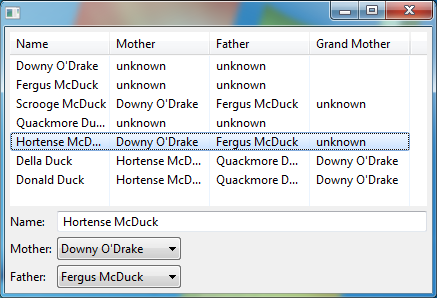
For example, if we have two classes: one in Java and another in EMF
public class Author {
protected EObject content;
...
}
where "content" can be an instance of Book class defined in EMF, which is a dynamic model with one attribute "title". In UI, if we just need to specify the binding in the same way,
<Text text="{Binding path=content.(Book.title)}" />
UpdateSourceTrigger.
In addition, a new property "updateSourceTrigger" has been added in the class Binding
and therefore in data binding expressions. This class indicates when modifications
to the data binding source model will occur. Many UI elements have only one possible trigger,
such as check buttons. However text widgets have two possibilities: when the content gets changed,
or when the focus is lost.
<Text text="{Binding path=name,updateSourceTrigger=FocusOut}">Condition
and all classes of Trigger to extend the expression support:
| Operator | Data type | Description |
| EG | Any | Equal |
| NE | Any | Not equal |
| LT | Number | Less then |
| GT | Number | Great then |
| LE | Number | Less and equal |
| GE | Number | Great and equal |
| LIKE | String | String matching. * and ? are supported. |
| IS_A | Any | Tests if an instance is a type |
| IS_KIND_OF | Type | Tests if a type is same or a subclass of another. |
XWT relies on the same concept to support TreeViewer. Two classes are provided and a property "contentPath" will be used to indicate the sub-nodes:
<ObservableListTreeContentProvider contentPath="list"/>
or:
<ObservableSetTreeContentProvider contentPath="set"/>
The screenshot below is snippet019 from the data binding framework ported to XWT.
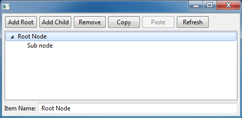
The new plug-in org.eclipse.e4.xwt.forms has been added to support creation of Eclipse forms in XWT. The support includes the latest forms API from Eclipse 3.5 and earlier.
{kind=link}
Three new methods are introduced in the XWT class: createProfile(), applyProfile(), and restoreProfile().
This solution is used by XWT Eclipse forms to support overwriting the standard SWT Widgets.
Three new API methods are added in the XWT class, and a new interface IChangeListener:
- addObservableChangeListener(Object context, IChangeListener listener)
- removeObservableChangeListener(Object context, IChangeListener listener)
This solution is implemented in the class XWTSaveablePart located in the bundle org.eclipse.e4.xwt.ui.workbench. All editors should inherit from this class to leverage this support.
This state management support is used in the last version of the e4 Contacts demo to manage the change state of the Details part.
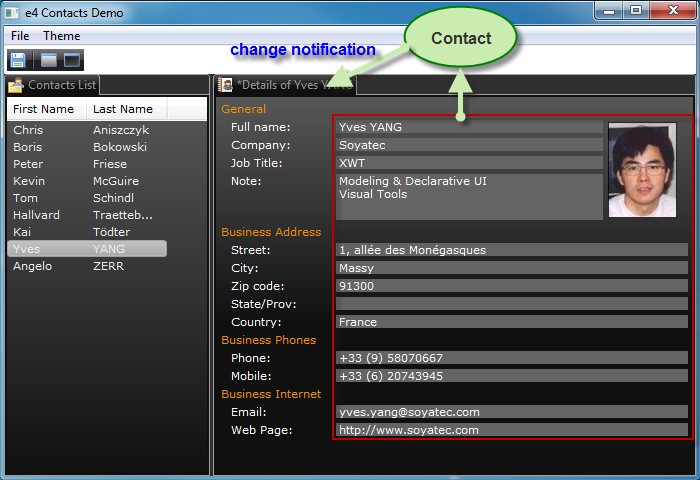
In the e4 Contacts demo, a full name is composed of two properties: first name and last name. A Text field is bound to a composite virtual property:
<Text>
<Text.text>
<MultiBinding>
<Binding path="firstName"/>
<Binding path="lastName"/>
</MultiBinding>
</Text.text>
</Text>
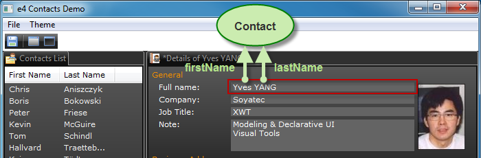
- ColorAnimation
- IntAnimation
- PointAnimation
- RectangleAnimation
These classes are driven by the class Storyboard via Event Trigger. Here is an example for the fade transition:
<Shell xmlns="http://www.eclipse.org/xwt/presentation"
xmlns:x="http://www.eclipse.org/xwt"
name="window">
<Shell.layout>
<GridLayout numColumns="1"/>
</Shell.layout>
<Label name="labelTarget" text="Int the animation"/>
<Button name="startButton" text="Start Animation">
<Button.triggers>
<EventTrigger routedEvent="SelectionEvent">
<BeginStoryboard name="MyBeginStoryboard">
<Storyboard>
<IntAnimation
targetName="window"
targetProperty="alpha"
duration="0:0:3" from="0" to="255" />
</Storyboard>
</BeginStoryboard>
</EventTrigger>
</Button.triggers>
</Button> </Shell> 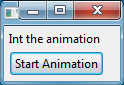
The fade animation starts when we click on the button "Start animation", it lasts for three seconds and the alpha value will change from 0 to 255.
Here is an example of a status bar that manages two Text fields.
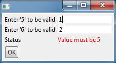
For example, MyFillComposite is a Composite with a FillLayout, we can create one without layout in the following way:
<MyFillComposite layout-"{x:Null}"/>To meet this requirement, a pre-processing mechanism is introduced. A callback will be called just after the loading of XWT Resource if the following option is provided in XWT.loadWithOptions().
options.get(IXWTLoader.BEFORE_PARSING_CALLBACK, preprocessor); XWT.loadWithOptions(url, options);
where the variable "preprocessor" is an instance of the type IBeforeParsingCallback.
{kind=link}
Here is the summary of the main features supported by XWT Visual Designer:
- A tool palette view
- WYSIWYG authoring
- Support for SWT and JFace
- Support for XML editing with code completion
- Integration with the tabbed Properties view
- Hierarchical outline view with DnD operation, copy/paste and undo/redo
- Support for all layouts: including SashForm
- String externalization
- Surround With
- Widget style change via context menus
- Advanced control binding editing
{kind=link}
This tool is tested on Windows, Linux and Mac OS Carbon/Cocoa.
In this release, the palette tool "Part" is completed. This tool creates an empty Part implementation. A dialog is presented during part creation: It is possible to create a Java based Part or a XWT based Part.


If the Data Context type is provided, the UI form is generated through the Bean structure.
An Input Part is a part that reads its root data from a data source such as a file. A "Contributed Input Part" palette tool has been added to create a Part that reads data from an EMF file.

After having provided the EMF data file in the creation option dialog, we can select the root object such as Customer. For a collection property, it is possible to check the option "Master/Detail" to generate the necessary code to update "Selection" property of the Eclipse selection service when an item gets selected.

The UI form for the Part is generated in XWT through the data structure and user selection.

A "Selection Part" is a part that displays the selected element in the Eclipse selection service. During the "Selection Part" creation using the "Contributed Selection Part" tool in the palette, an option dialog is presented that requires a data type. The data type can be a type defined in an EMF data file, or directly in a Java class. The tool also allows you to select the properties to display.

With "Input Part" palette tool, we can create an e4 application in Master/Detail presentation pattern without one line hand code.

{kind=link}
The following components/features are implemented:
- A tool palette view
- WYSIWYG authoring
- Part layout reorganization using DnD
- Integration with the standard Properties view
- Hierarchical outline view
This tool is tested on Windows, Linux and Mac OS Carbon/Cocoa.
A screencast is provided to help getting started with an e4 application. It shows how to develop, run and deploy an e4 application using the e4 wizard and e4 Visual Designer.
- DnD for moving and copy
- DnD creation from Palette
- Copy/Paste/Cut
- Undo/Redo
A command-based mechanism has been added in both the Outline view and WYSIWYG editor to guarantee the correctness of the UI model and provides the undo/redo capability.
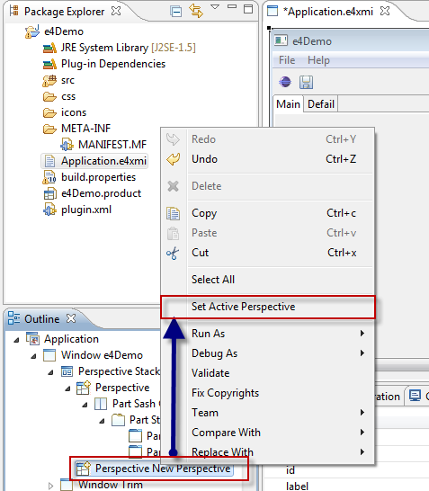
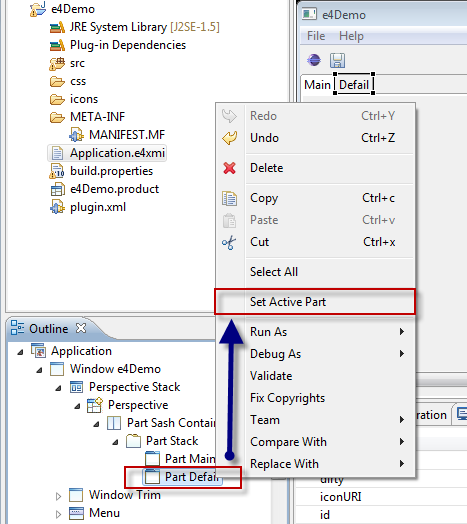
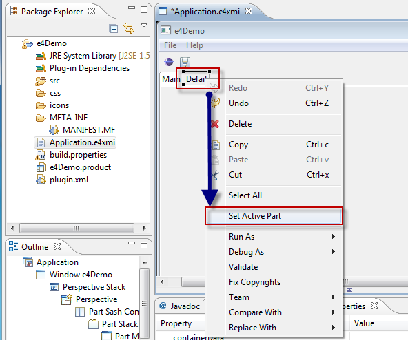
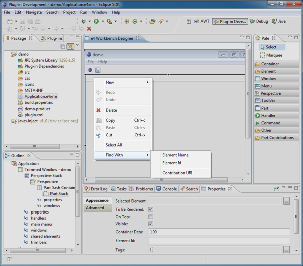
Three submenu entries are created, corresponding to three kinds of search on Element Name, Element Id and Contribution URI.
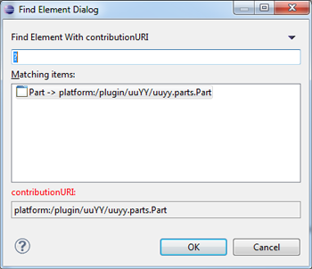
The found element will be selected in the current part view.
This feature is a basic operation that can be used to setup the references between any elements in the Properties view.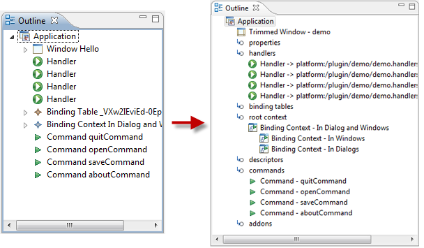
This release changes the view by adding the categories as defined by the containment property, except the children property.
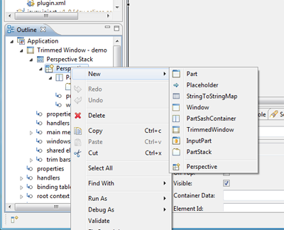
After the calling of this menu, a dialog in Rich UI is displayed for data initialization, in which all required information (denoted by "*") must be provided.
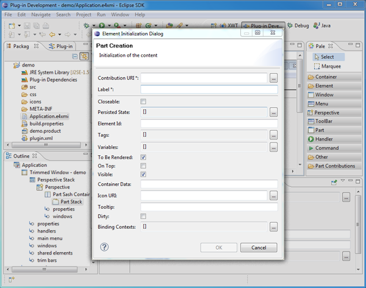
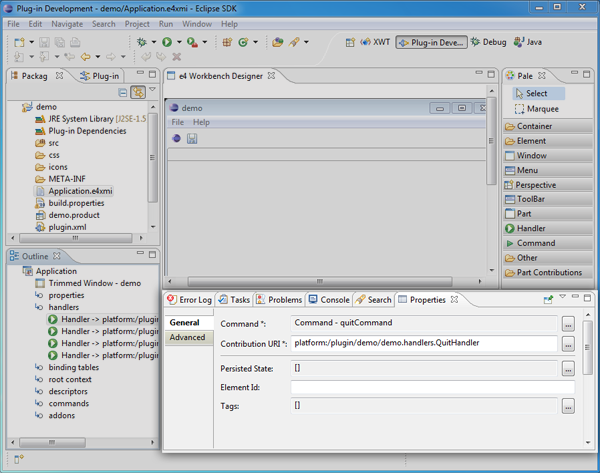
- Editing the model at design time
- Editing a live model in a running e4 application instance
- Integration with JDT to define contributions using auto-completion
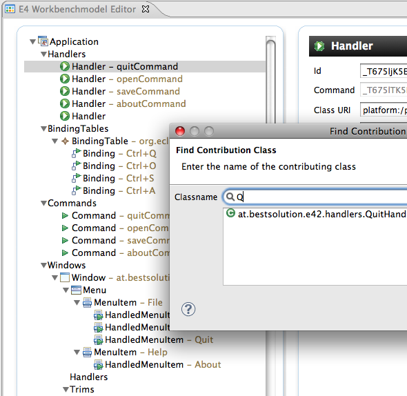
- Eclipse 3.6 SDK:
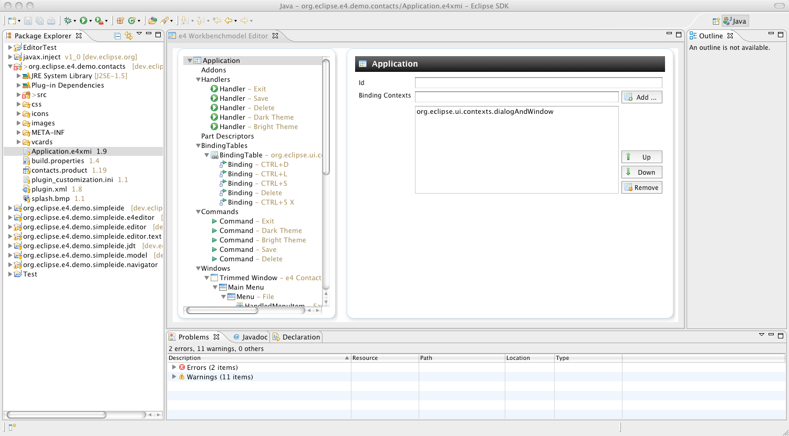 - Eclipse 4.0 SDK:
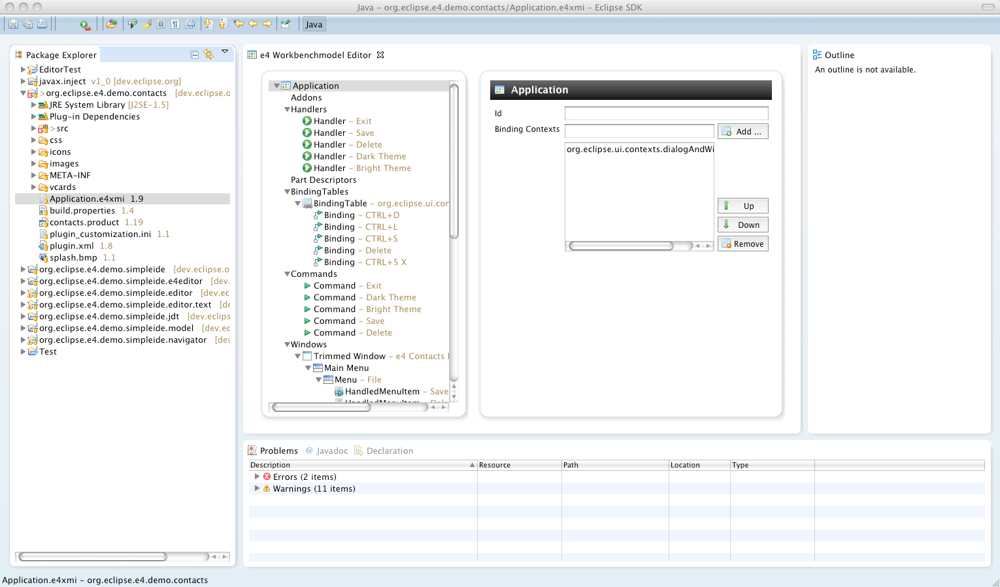 - "Native" e4-Application:
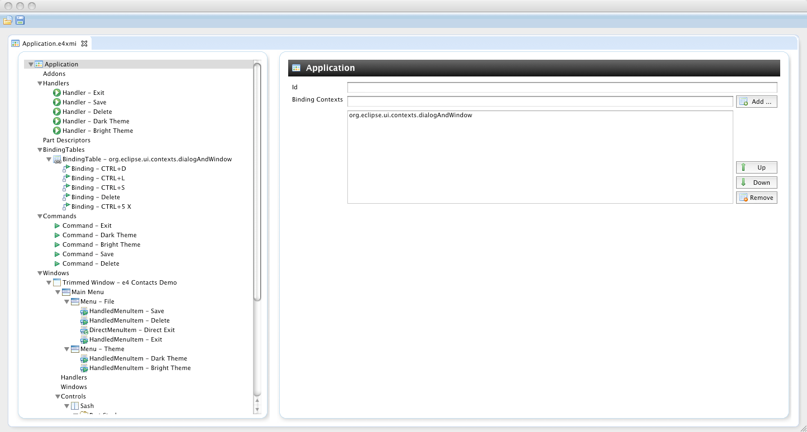
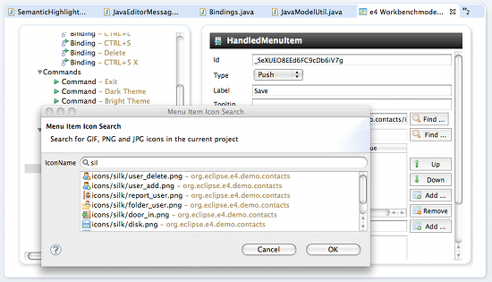
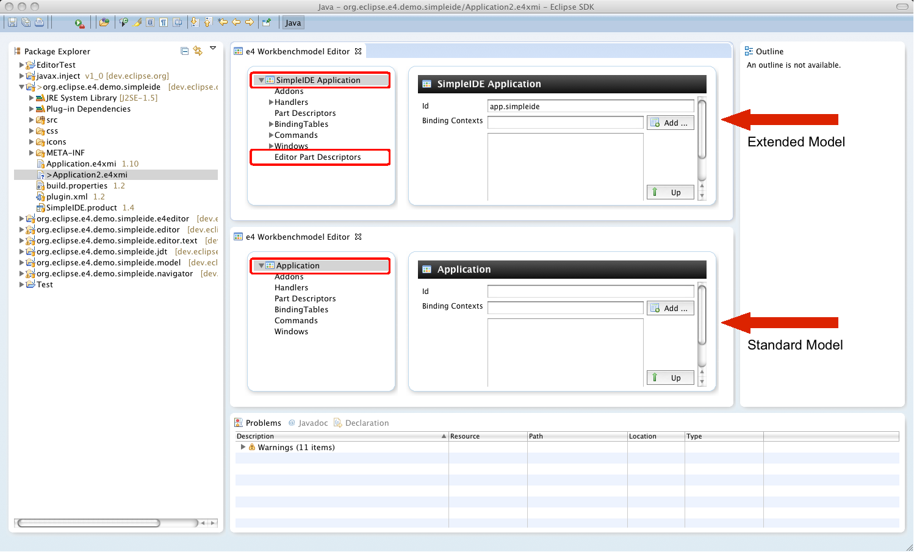
The SFS allows the resource model to tap a variety of sources of information that reside on the Internet or a corporate network. The minimal requirement is that the source of information exposes its content in the form of Internet resources. That is, pieces of information that can be addressed via URI/URL and transferred via a byte stream. The resource-based content will usually be accessed via the HTTP protocol but the SFS also allows plugging in other communication protocols.
Remote content exposed via SFS can be mounted as a resource hierarchy underneath an Eclipse project so that standard Eclipse editors/tools can work with this content as if it were coming from the local file system.
You can start playing with local-only aspects of the SFS by creating a new project and choosing SFS as a file system implementation:
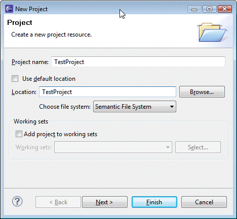
You can discover the full capabilities of SFS by running through SFS Examples that demonstrate additional features and aspects of the user interface.
- Repository Provider to control content lifecycle (e.g. open for edit, revert, etc)
- Synchronization support to control flow of changes between Eclipse and remote sources of information
- History View
- Merge/Compare
For example, you can share the project via the SFS Repository provider in order to enable FileModificationValidator and MoveDeleteHook functionality:
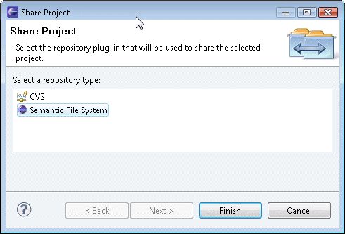
Or you can open the Synchronize perspective and examine your changes using Compare Editor:
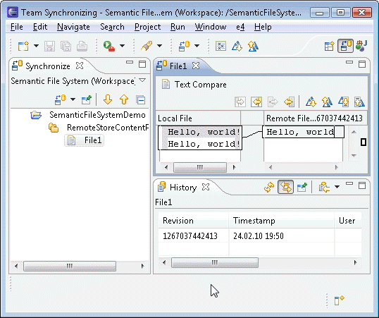
For more information about Semantic File System, see the SFS wiki.
The SFS is currently in an early incubation phase so that the APIs and the functionality are likely to be changed/extended in the upcoming releases.

For more information take a look at: e4 wiki page